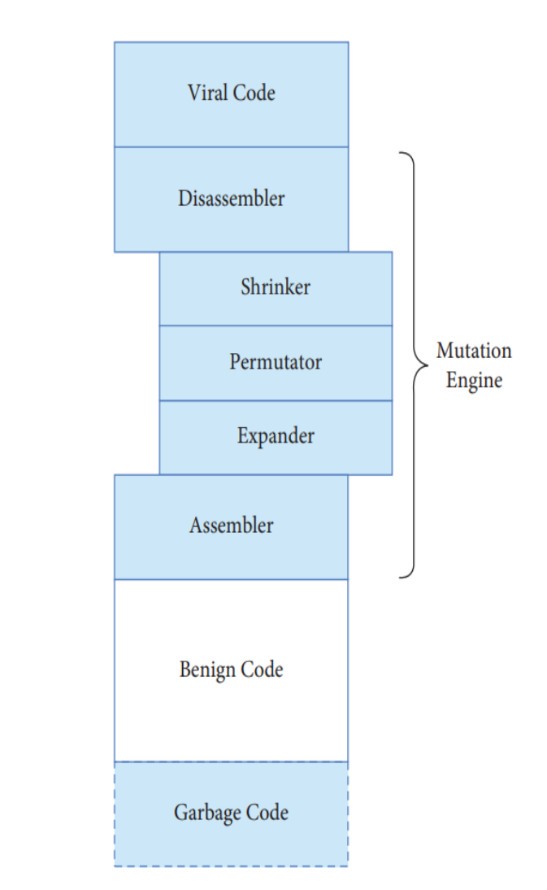
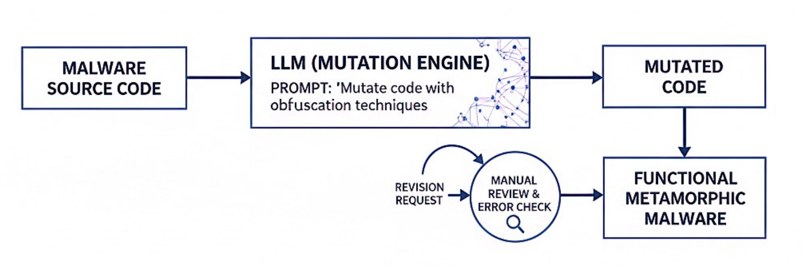

An in-depth analysis of Metamorphic Malware, Attack Vectors, and the role of Artificial Intelligence in modern evasion techniques.
Read ArticleIn the modern cybersecurity environment, a continuous and largely invisible arms race is underway between attackers and defenders. Each advancement in defensive capability—ranging from signature-based antivirus to heuristic analysis, Endpoint Detection and Response (EDR), and AI-driven behavioral monitoring—inevitably prompts attackers to adapt their techniques. Malware is no longer designed solely to infect systems, but to survive within them for as long as possible.
Early malicious software relied on static code and repetitive distribution, making it relatively easy to identify using hashes and known byte signatures. However, as detection mechanisms improved, attackers were forced to innovate. This evolution led to increasingly evasive malware families capable of altering their structure, execution flow, and runtime behavior in order to avoid identification and analysis.
Today’s threat landscape is dominated by malware engineered for stealth, persistence, and adaptability. These threats actively resist reverse engineering, delay execution to evade sandboxes, and dynamically modify their internal structure to defeat static and heuristic detection techniques. Among these, polymorphic and metamorphic malware represent some of the most advanced and dangerous classes.
From a defensive standpoint, these techniques directly challenge many traditional security assumptions. Static indicators of compromise (IOCs), file hashes, and known signatures are increasingly unreliable, shifting the focus toward behavioral analysis, memory inspection, and intent-based detection models. Understanding the taxonomy and evolution of malware is therefore essential for building effective, modern defenses.
Malware (malicious software) refers to any software intentionally designed to disrupt operations, gain unauthorized access, exfiltrate data, or compromise the confidentiality, integrity, or availability of systems. Malware manifests in many forms, each aligned with specific tactics, techniques, and procedures (TTPs) as categorized by frameworks such as MITRE ATT&CK.
The following categories represent the most common malware types encountered in real-world attacks, often used in combination across multiple stages of an intrusion lifecycle:
Within the MITRE ATT&CK framework, these malware types may participate in multiple stages of an attack, including Initial Access, Execution, Persistence, Defense Evasion, and Command and Control. Metamorphic malware, in particular, is closely associated with advanced defense evasion techniques, representing a significant challenge for both automated and human-driven analysis.
An attack vector is the path or method used by threat actors to gain initial access to a target environment and deliver a malicious payload. These vectors map closely to the Initial Access and Execution phases of the MITRE ATT&CK framework and are often combined to form multi-stage intrusion chains. Understanding how malware is delivered is critical, as prevention and early detection at this stage can stop an attack before persistence or lateral movement is established.
Modern attackers favor vectors that exploit human trust, unpatched systems, or complex supply chains, allowing malware—particularly polymorphic and metamorphic variants—to enter environments unnoticed. Once inside, these threats often deploy additional techniques to evade defenses and escalate privileges.
In real-world attacks, these vectors are rarely used in isolation. A single campaign may combine phishing for initial access, vulnerability exploitation for execution, and network propagation for lateral movement. Metamorphic malware thrives in this environment, as its ability to constantly change form allows it to pass through multiple stages of an attack without being reliably identified.
As defensive technologies matured, malware detection shifted from simple file hashes to signature-based analysis, heuristic rules, and behavioral monitoring. In response, malware authors began designing code not only to perform malicious actions, but also to actively avoid identification. This escalation gave rise to successive generations of evasive malware, each intended to defeat the dominant detection techniques of its time.
Early antivirus engines relied heavily on static byte patterns to identify known threats. Once these signatures became widespread, attackers were forced to develop methods that could produce large numbers of unique malware instances from a single codebase. Two major evolutionary milestones emerged from this pressure: polymorphic malware and metamorphic malware.
Polymorphic malware represents the first major step toward automated evasion. Rather than exposing a consistent byte pattern, polymorphic threats encrypt their malicious payload and vary both the encryption key and the accompanying decryption routine with each infection. As a result, no two samples appear identical at the binary level.
While this approach is highly effective against static signature-based detection, the core malicious logic remains unchanged beneath the encryption layer. To execute, the malware must decrypt itself in memory, revealing a stable runtime structure. This characteristic allows advanced defenses—such as emulation, sandboxing, and memory analysis— to identify polymorphic malware based on behavior rather than appearance.
Metamorphic malware advances evasion beyond encryption entirely. Instead of hiding its payload, it transforms it. With each execution or propagation cycle, the malware rewrites its own code, generating a new version that is functionally identical but structurally distinct.
These transformations can include instruction substitution, code reordering, register reassignment, dead code insertion, and control flow modification. Because the underlying logic itself is altered, metamorphic malware produces no stable signature, no consistent decryptor, and no fixed execution pattern.
Definition: Metamorphic malware is malicious software capable of autonomously rewriting its own code during execution or replication, preserving its intended behavior while fundamentally altering its internal structure to evade static, heuristic, and in some cases behavioral detection mechanisms.
Within the MITRE ATT&CK framework, metamorphic techniques are strongly associated with Defense Evasion, particularly methods designed to obstruct analysis, bypass security controls, and frustrate reverse engineering. These capabilities make metamorphic malware especially effective in long-term, stealth-focused operations where persistence and survivability are prioritized over rapid impact.
At the core of every metamorphic malware strain lies a specialized component known as a Mutation Engine. This engine is responsible for transforming the malware’s code while preserving its original functionality. Unlike simple obfuscators, a metamorphic engine operates on the program’s logic itself, producing structurally unique variants that resist static analysis, signature generation, and heuristic detection.
From an architectural perspective, the mutation engine functions as an automated reverse-engineering and recompilation pipeline. Each execution or propagation cycle generates a newly mutated instance, ensuring that no stable binary representation exists across infections.

Figure 4.1: The internal cycle of a metamorphic engine
To successfully evade detection, metamorphic engines rely on a diverse set of obfuscation and transformation techniques. These methods are designed to alter a program’s structure, syntax, and control flow without changing its observable behavior at runtime. Many of these techniques directly support Defense Evasion objectives as defined in the MITRE ATT&CK framework.
XOR A, A → SUB A, A,
or ADD A, 2 → INC A; INC A),
altering opcode sequences while preserving results.
calcularTotal() → a1b2c3()),
significantly reducing readability and complicating reverse engineering,
especially in interpreted or semi-compiled languages.
When combined, these techniques allow metamorphic malware to generate an effectively unlimited number of unique variants from a single codebase. For defenders, this eliminates reliable static indicators and necessitates detection strategies focused on runtime behavior, memory analysis, and intent-based modeling rather than code appearance.
Traditional metamorphic engines, while effective, are complex, brittle, and costly to develop and maintain. They require deep expertise in compiler design, instruction semantics, and control-flow analysis, and even small implementation errors can break malware functionality. Artificial Intelligence, and more specifically Large Language Models (LLMs), are fundamentally altering this landscape.
AI is no longer an advantage exclusive to defenders. The same models used for secure code review, malware classification, and anomaly detection can also be repurposed to automate code mutation, obfuscation, and adaptation. This marks a significant shift in offensive capabilities, lowering the barrier to entry for advanced evasion techniques.
Recent research and proof-of-concept demonstrations show that LLMs can effectively replace traditional, rule-based mutation engines. Because these models are trained on vast corpora of source code across multiple languages and paradigms, they possess a deep understanding of syntax, semantics, and common programming patterns.
When prompted correctly, an LLM can take an existing codebase—malicious or otherwise—and rewrite it in a structurally distinct form while preserving functionality. Unlike classic metamorphic engines, which rely on predefined transformation rules, AI-driven mutation is probabilistic, semantic-aware, and highly flexible.
This enables a new generation of malware capable of generating functionally equivalent variants without relying on disassemblers, shrinkers, or handcrafted obfuscation logic. From a MITRE ATT&CK perspective, this significantly enhances Defense Evasion and Obfuscated/Encrypted Payload techniques by automating diversity at scale.

Figure 5.1: Adaptive metamorphic malware generation using LLMs
The result is a new paradigm known as Adaptive Metamorphic Malware. In this model, the mutation process is no longer static or preconfigured. Instead, it becomes context-aware. An attacker can supply environmental details—such as operating system version, active security products, sandbox indicators, or architectural constraints—and the AI generates a tailored variant optimized for that specific target.
This adaptability allows malware to evolve not just between infections, but potentially in response to failed execution, partial detection, or environmental changes, blurring the line between malware generation and autonomous decision-making.
Threat actors leveraging AI for malware development generally choose between cloud-hosted models and locally deployed open-source models. Each option presents distinct operational trade-offs.
From a defensive standpoint, the emergence of AI-driven metamorphic malware represents a fundamental escalation. Detection strategies based on static signatures or fixed heuristics become increasingly ineffective, reinforcing the need for behavioral analysis, memory inspection, and intent-focused detection mechanisms capable of identifying malicious activity regardless of how the underlying code is written.
The convergence of metamorphic malware and Artificial Intelligence marks a pivotal escalation in the evolution of cyber threats. By harnessing the code generation and transformation capabilities of Large Language Models, attackers can now create an effectively unlimited number of functionally equivalent malware variants, each tailored to its execution environment and defensive controls. This level of adaptability represents a fundamental departure from traditional malware design.
As a result, long-standing defensive strategies centered on static indicators—such as file hashes, signatures, and known byte patterns—are increasingly ineffective. Even heuristic-based detection struggles when malicious logic is continuously rewritten while preserving behavior. Modern defenders are therefore forced to shift focus toward runtime observation, memory-level inspection, and behavioral correlation across systems.
From a strategic perspective, this evolution reframes cybersecurity as a contest of intent rather than appearance. Security tools must be capable of identifying malicious objectives—such as unauthorized access, persistence, lateral movement, or data exfiltration—regardless of how the underlying code is structured. Frameworks like MITRE ATT&CK provide a critical foundation for this approach by emphasizing tactics, techniques, and procedures over static artifacts.
Looking forward, the continued integration of AI into offensive tooling suggests a future where malware becomes increasingly autonomous, adaptive, and resilient. Defending against such threats will require equally advanced countermeasures, including AI-assisted detection, cross-layer visibility, and continuous threat modeling. In this emerging landscape, understanding the evolution and mechanics of metamorphic malware is no longer optional—it is essential for maintaining effective cybersecurity defenses.